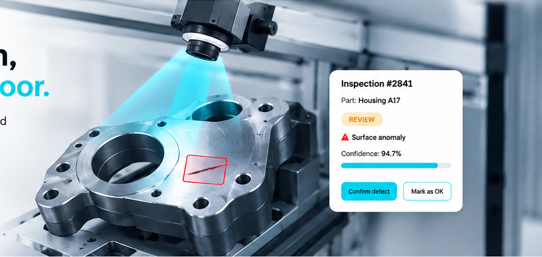

1 · CAPTURE

Housing A17
Line 1 · Station 3 · Sample image
PRODUCT WALKTHROUGH
This browser-only simulation shows capture, AI suggestion, human review and structured learning. It does not run a real model or upload an image.
1 · CAPTURE

Line 1 · Station 3 · Sample image
2 · AI SUGGESTION
Example surface anomaly. A human reviewer makes the final decision.
3 · HUMAN VERIFIED
One verified sample is added to the illustrative learning queue.
For a real pilot, KanbAI adds trusted HTTPS, tenant isolation, real camera validation and a factory-approved model evaluated against ground truth.